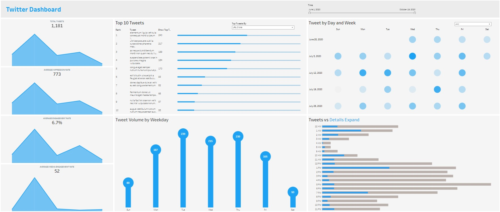

Tableau Dashboards

Customer complaints dashboard provides data visualization that tracks complaints by bank products, request types,
US states and changes over 10-year period. A top bar displays total number of complaints with a share per each bank product.
The dashboard includes four interactive graphs that display the information based on a selected product from a drop-down list.
A key feature is a visualization of a complaint's distribution by states and products with two options: a geographical map and tile chart.
The more intense colors mean a high number of complaints and a lack of intensity displays fewer numbers.

Twitter interactive dashboard displays social media trends and KPIs using a date range slider for filtering information within the dashboard.
The left column of graphs displays Tweets KPIs based on a chosen time period.
The middle part presents creative visualizations of the top 10 tweets with the opportunity to filter by engagements, media engagements & URL clicks
and lollypops of tweets volume by weekdays.
A key feature is a monthly calendar with displaying a number of tweets by days and weeks.
A blue color intensity visualizes a number of tweets: the more intense color, the higher number of tweets.
Excel Dashboard

American Retailers interactive dashboard presents operating profit and sales KPI's by brand, region and retailer to measure a business's performance
over a set period of time. It allows to observe brand's progression towards specific sales goals. It also enables to make informed management decisions
using historical trends and metrics.
A key feature is integrated dashboard filters by retailers, regions and brands into its design. With just a few clicks,
it easily makes adjustments that affect the data displayed throughout the numbers, charts and the map.